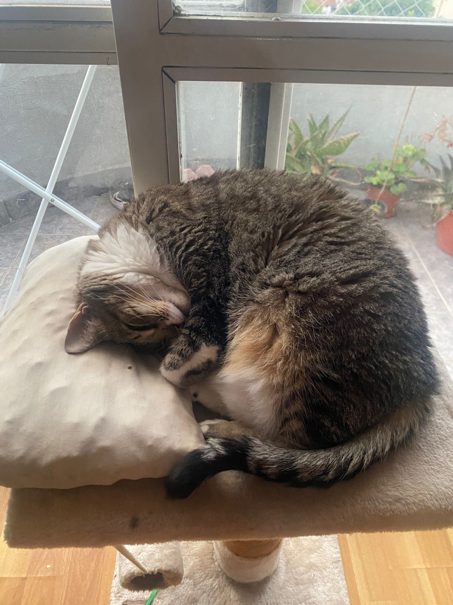

La ventana del balcón

Arriba del mueble junto a la ventana tiene su propia camita, con vista directa al balcón y a las plantas. Es el rincón preferido para las siestas largas de la tarde, cuando entra el sol y hace justo la temperatura perfecta para quedarse dormida hecha un rollo.